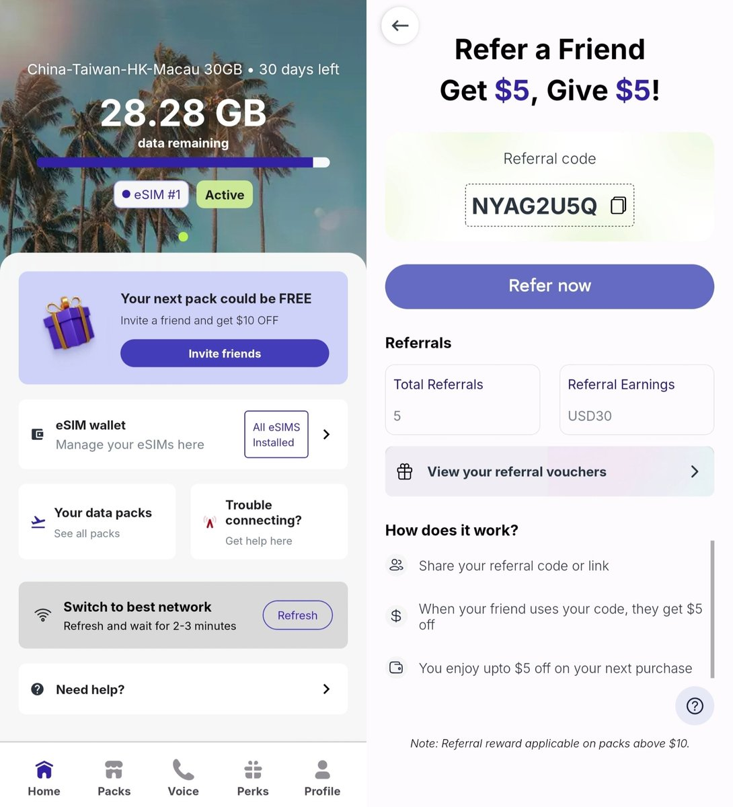
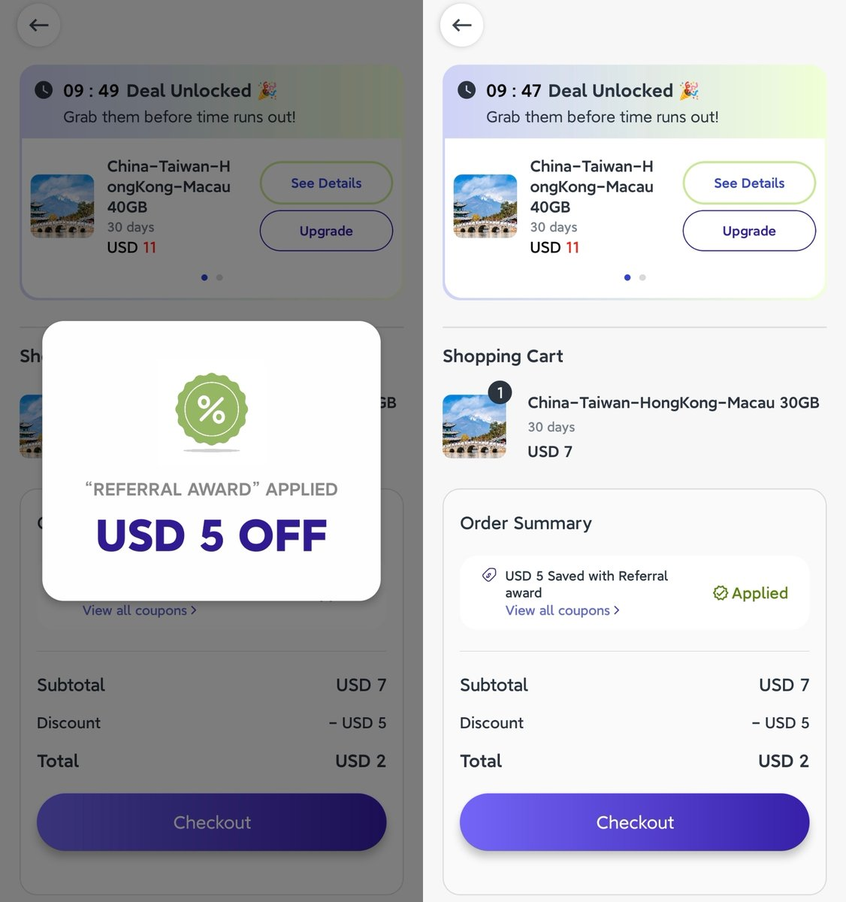

看来大家对Jetpac叠叠乐很感兴趣，不过有个硬性条件是套餐需≥10USD，凑巧30G升40G是11刀。使用邀请码各得5刀，首邀额外奖励10刀给邀请人。
下午弄了10个新号，以手牵手的形式实验了下，第1个走「NYAG2U5Q」领5刀，第2个走第1个码，...，直到第10个走第9个码。
串好以后，拿第10个号卖6刀（11-5），第9个号得到10刀首邀+5刀奖励。再拿第9个号以此类推，除了第10个号，每个大号们就会得到2张券进行10刀拿来减40G 实付1刀。
至此40GB月包就买了10份，总计（9+6=15刀）。除了第10个，每个大号还剩5刀券拿来减30G 实付2刀，总计（2*9=18刀）。一共是9份30GB和10份40GB，一共670GB花费33刀（约231元）。
平均下来0.35/GB，并且支持中港澳台两岸四地漫游使用，那么多流量我确实是用不完了！如果半年前就有，或许我不会上台那个老背刺我的CMHK了🤣🤣🤣


下午弄了10个新号，以手牵手的形式实验了下，第1个走「NYAG2U5Q」领5刀，第2个走第1个码，...，直到第10个走第9个码。
串好以后，拿第10个号卖6刀（11-5），第9个号得到10刀首邀+5刀奖励。再拿第9个号以此类推，除了第10个号，每个大号们就会得到2张券进行10刀拿来减40G 实付1刀。
至此40GB月包就买了10份，总计（9+6=15刀）。除了第10个，每个大号还剩5刀券拿来减30G 实付2刀，总计（2*9=18刀）。一共是9份30GB和10份40GB，一共670GB花费33刀（约231元）。
平均下来0.35/GB，并且支持中港澳台两岸四地漫游使用，那么多流量我确实是用不完了！如果半年前就有，或许我不会上台那个老背刺我的CMHK了🤣🤣🤣


很多刚入门eSIM的推友都不知道玩什么卡，那分享点性价比高到不行的漫游上网卡，价格在0.61-0.7元/GB。单纯短期回国或到港澳台旅游都用的上，只不过IP是新加坡的，延迟比香港电话卡略高
大概分两种，分别是3刀30GB和7刀80GB的30天套餐，可以写入小白卡，购买后90天内激活就行。下载Jetpac，注册新号 https://t.co/zJCoErg3kS
大概分两种，分别是3刀30GB和7刀80GB的30天套餐，可以写入小白卡，购买后90天内激活就行。下载Jetpac，注册新号 https://t.co/zJCoErg3kS